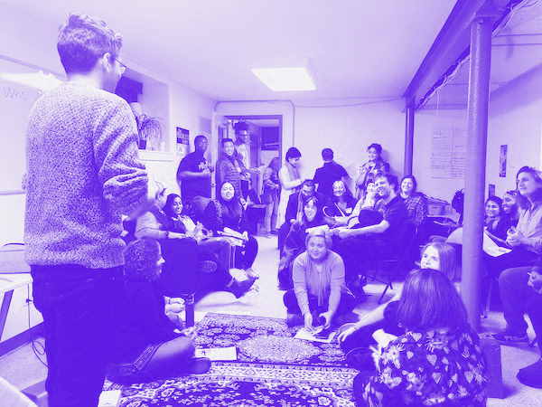

commonfolk Co-founder
001
A creative collective rooted in collaborative practices and processes. We look to cultivate interconnectedness within creative communities, build platforms that support marginalized folks, and imagine a better, alternative future through explorations of the creative process.
Artist Pop-Ups Co-Coordinator
Every month or so, we host an intimate artist showcase of presentations, performances, and small group discussions. Five artists are invited, along with 25 guests, as we work towards building a more connected creative community.
